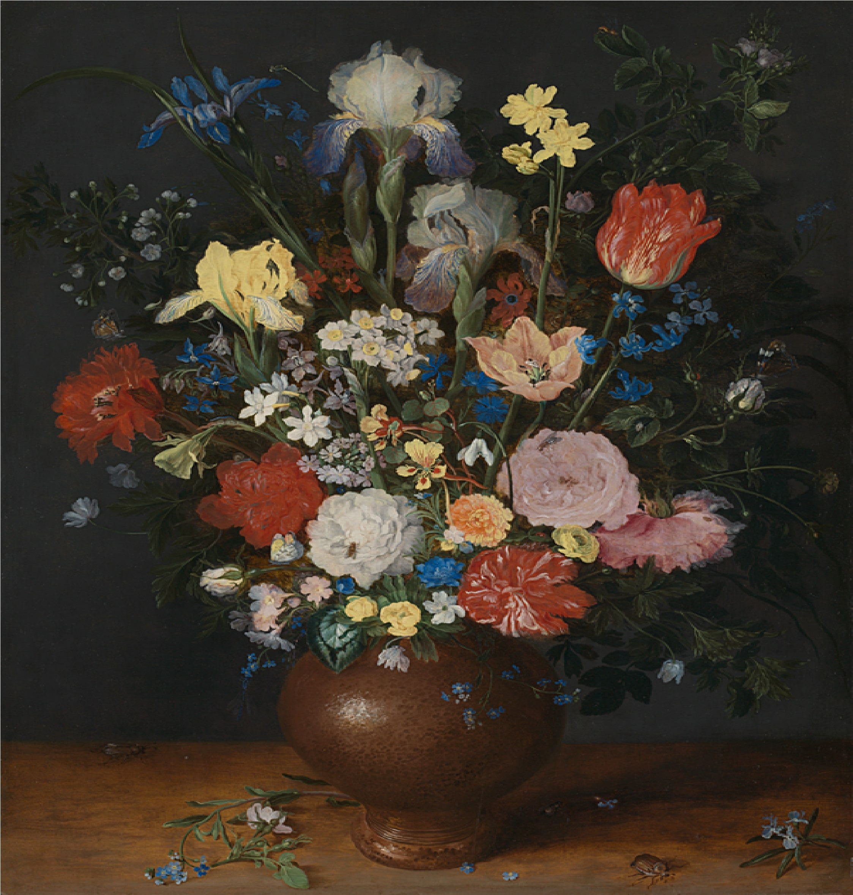

Bouquet in a Clay Vase

- Artist - Jan Brueghel the Elder
- Date made - About 1609
- Medium and support - Oil on wood
- Dimensions - 56 × 42 cm
The flowers in the painting are carefully arranged and rendered with remarkable detail, showcasing Brueghel's mastery of botanical accuracy. The bouquet includes a variety of flowers, including tulips, roses, lilies, daisies, and carnations, each one painted with precise brushstrokes and delicate shading to create a sense of volume and depth.